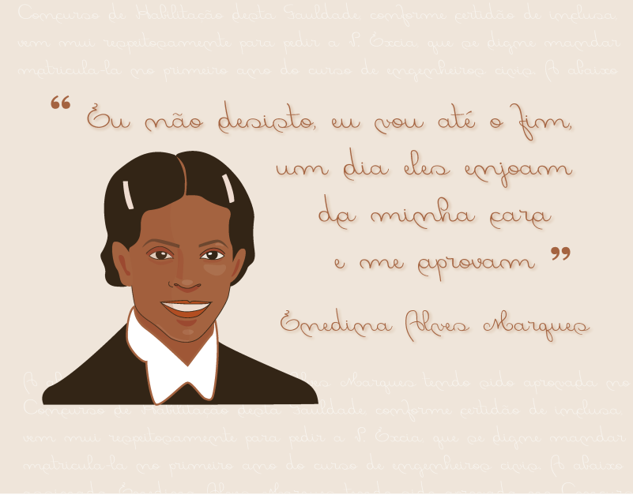
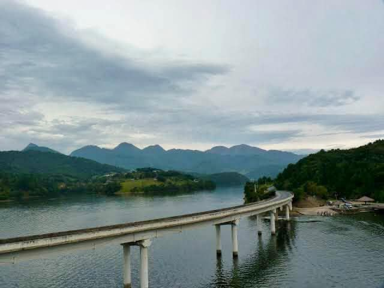

De acordo com Eleny, uma amiga, Enedina desafiava os padrões de sua época, vestindo calças e portando um revólver. Em algumas ocasiões, quando dormia nos acampamentos de construção, Enedina disparava tiros para se proteger ou impor respeito entre os trabalhadores. Embora essas ações extremas fossem raras, a postura séria, rigorosa e enérgica de Enedina lhe conferia autoridade (SANTANA, 2011).
Sua História
Enedina Alves Marques nasceu em 15 de julho de 1913, em uma família negra humilde no estado de Minas Gerais, Brasil. Ela cresceu em um ambiente rural, onde enfrentou a discriminação racial e de gênero desde cedo. No entanto, Enedina sempre foi uma aluna dedicada e apaixonada por matemática e física.
Em 1945, ela se formou em engenharia civil pela Universidade Federal de Minas Gerais, tornando-se a primeira mulher negra a se formar em engenharia civil no Brasil. Sua conquista foi notável, considerando o contexto social e as barreiras enfrentadas por mulheres e afrodescendentes naquela época.
Enedina trabalhou em várias empresas e órgãos públicos como engenheira civil, projetando e supervisionando a construção de estradas, pontes e barragens em várias regiões do Brasil.
Ela também foi uma defensora incansável dos direitos das mulheres e dos afrodescendentes, lutando por igualdade de oportunidades e enfrentando o preconceito racial e de gênero em sua carreira.

Inicialmente, atuou como professora na Escola da Linha de Tiro, localizada no Juvevê. Logo após sua entrada, em 1946, ela assumiu o cargo de auxiliar de engenharia na Secretaria de Estado de Viação e Obras Públicas, onde se destacou entre seus colegas.
Esse destaque lhe rendeu uma transferência pelo governador Moisés Lupion para o Departamento Estadual de Águas e Energia Elétrica do Paraná.
Como engenheira do estado, teve participação no chamado "plano hidrelétrico", que visava o aproveitamento das águas dos rios Capivari, Cachoeira e Iguaçu.
Seu trabalho e dedicação foram reconhecidos em várias ocasiões, recebendo homenagens e prêmios por sua contribuição à engenharia civil e à luta por igualdade.
Enedina Alves Marques faleceu em 22 de maio de 2011, mas seu legado como uma pioneira na engenharia civil
e defensora dos direitos humanos continua sendo uma inspiração para as gerações futuras.

Usina Parigot de Souza, a qual participou enquanto engenheira.